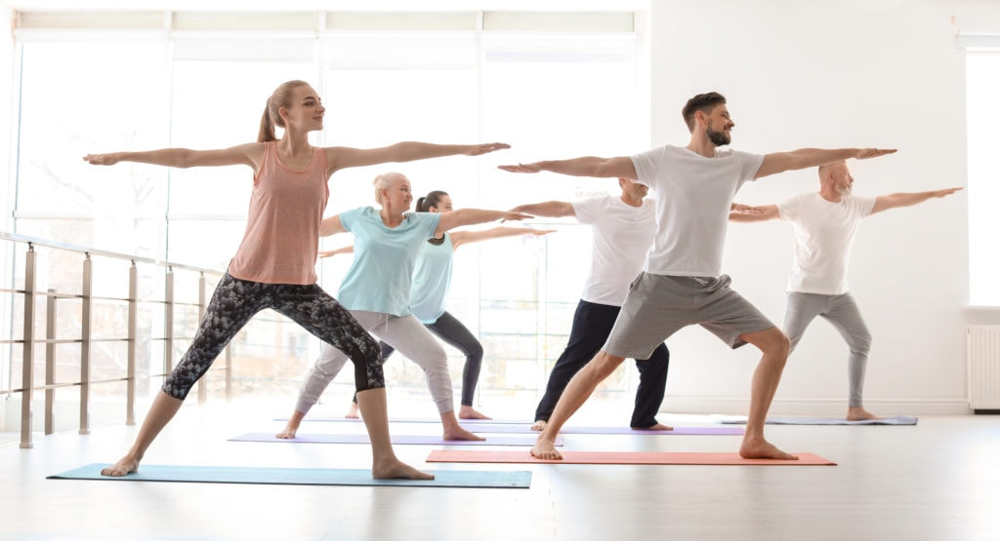
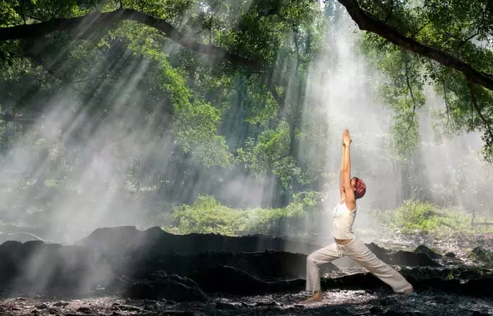
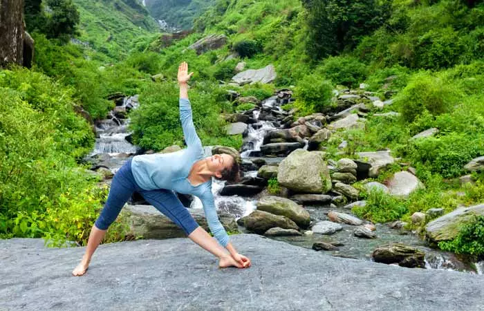
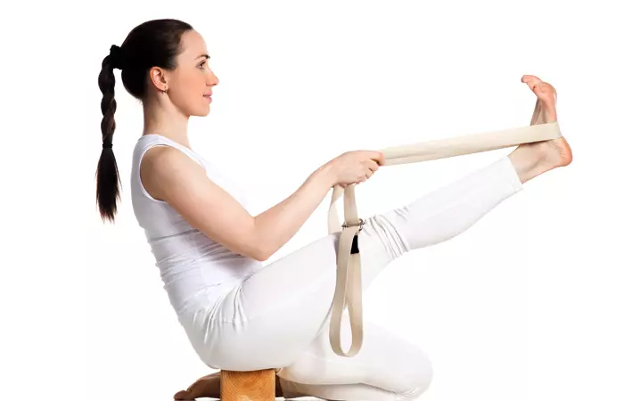
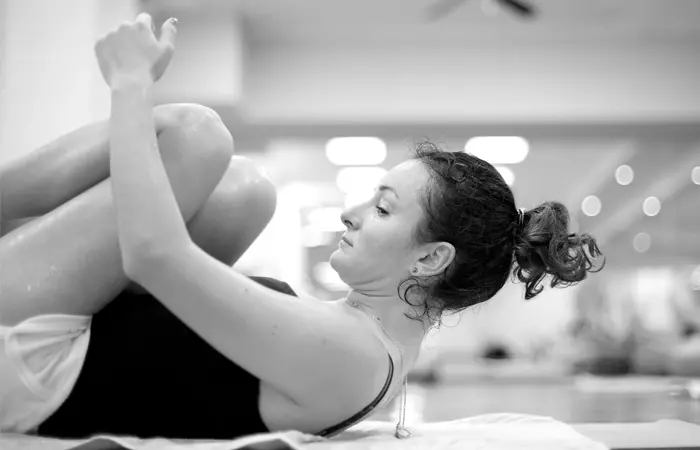
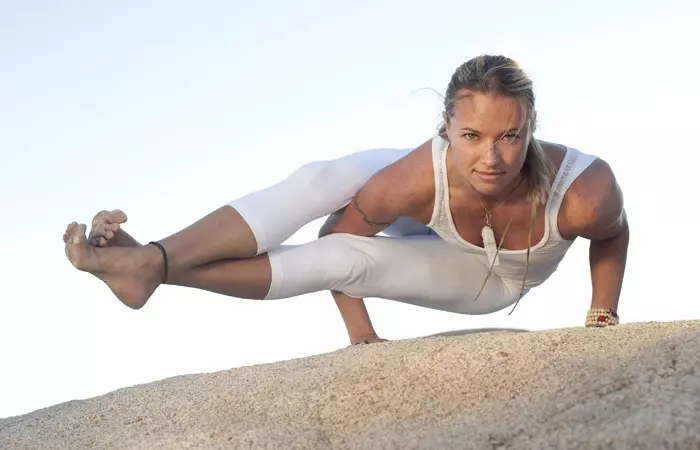
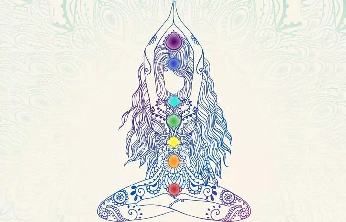
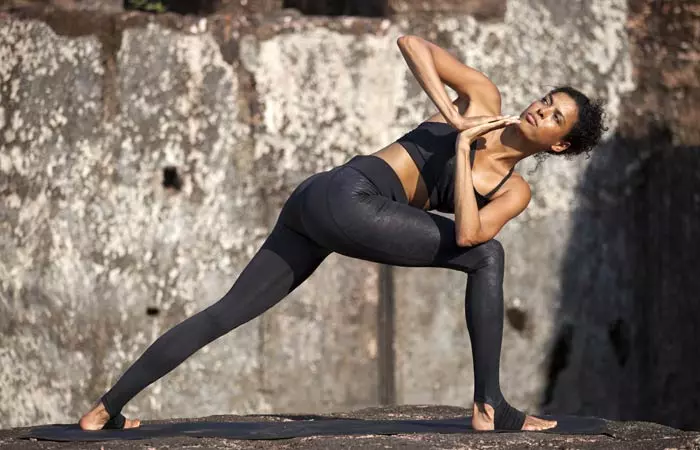
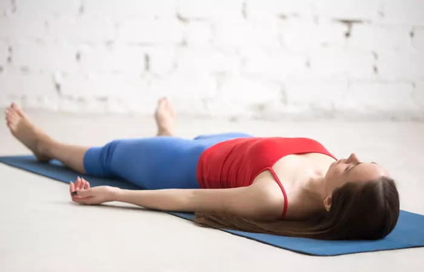

There are two kinds of people in the world – those who work out and those who don’t.
If you fall into the second category, then God help you! You are bound to suffer from a whole lot of problems as you age.
But if you do work out, here’s some food for thought. The many years of workout, paired with a good, clean diet, are working in your favor. But your body needs more, and therefore, you must embrace yoga. Yoga is not just a workout; it is a way of life. It connects your body, mind, and soul to the Universal Consciousness.
Although yoga entails twists and turns, stretches and bends, along with a complex and intense breathing routine, these are only the superficial aspects of this beautiful expression of life. It inculcates discipline and grace and balances our energies and emotions.
Sadhguru Jaggi Vasudev from Isha Yoga says, “Far beyond merely bending the body, the science of Yoga provides the ultimate tool for enhancing human capabilities and functioning at the highest peak of body and mind.”
If all of this has inspired you enough to take up yoga, take a look at the different types of yoga routines, and what you should expect in class. Yoga is so versatile – there is something for everyone in it.

Hatha is a Sanskrit word that means force. It usually includes the physical aspects of the practice. It is the mother of all the yoga practices. All the other subgroups fall under this category. The Hatha Yoga class is usually a slow-paced one and does not follow a flow. This class is perfect for beginners as it gently inducts you into yoga. If you are a seasoned Yogi, this class works as a great unwind. This class is all about basics. It teaches you how to breathe; it teaches you the postures, meditation and relaxation techniques as well. If you are new to yoga, you should probably enroll yourself in a Hatha Yoga class to begin with.

This style of yoga requires you to coordinate your breath with movement, and emphasizes on creating a flow of postures, with smooth transitions from one to the next. Vinyasa literally means connection. You need to connect your movements with an inhale, or an exhale. You could use this style through the Surya Namaskar, the balancing poses, backbends, or seated poses. The workout ends with the Savasana.
This class is based on the teacher’s creativity, and it does not have a hard and fast structure. Sometimes, spirituality is incorporated in these courses, with a dash of meditation and chanting. Other instructors believe in keeping it athletic. You can pick whatever interests you when you enroll yourselves in this class. This category can be slow and gentle or fast and intense, depending on your level. As a beginner, you should look for a slower class initially, and then graduate to a fast-paced one.

his style of yoga focuses on alignment. The class doesn’t quite have a flow, like the Vinyasa style. Each pose in Iyengar is intense, and you need to hold it for a long time and expand as you breathe. This style of yoga works with a whole lot of props, like straps, blocks, and blankets. For those who like to go into the details and feel and learn the pose intensely, this is your pick! This class also works for those who have injuries and chronic problems. This style tends to accommodate all limitations, and in turn, makes you stable, flexible, and strong.

This style of yoga is Hot-Hot-Hot! If you try this, you are sure to sweat it out. Bikram Yoga is usually done in a room that is heated to 40 degrees centigrade, with 40% humidity. The idea is to sweat it out. It branches out from the Vinyasa style. So, in a Bikram Yoga class, you will essentially practice the asana in coordination with your breath. The founder, Bikram Choudhury, formulated a sequence of 26 postures, with the belief that it systematically challenges each and every part of the body, be it the muscles, veins, ligaments, or the organs.

This style of yoga is popularly called the Power Yoga and is considered to be a contemporary version of the classical yoga. Initiated by K. Pattabhi Jois, this form of yoga also interlinks movement with breath, but the movements are more defined. You progress gently with each asana, and every action is practiced with an inversion. You start with the Primary series, and once you have mastered it, you graduate to the next level. It takes years to advance, but the focus is always the postures and not the progression. If being in a structured, power-packed practice is your thing, this style is for you.
This form of yoga is more much more than a practice – it is a way of life. It includes ethical, spiritual, and physical aspects. Formulated by Sharon Gannon and David Life, this style of yoga also talks about being mindful of the environment, so you must be kind to animals and become vegan. The five most important aspects of this method are Shastra (scripture), Bhakti (devotion), Ahimsa (non-harming), Nada (music), and Dhyana (meditation). In a typical class, you would start off by setting an intention, followed by chanting, and then, breathing awareness. It includes Vinyasa movements and ends with relaxing and meditation. This style of yoga is a complete package that includes spirituality with physical benefits. If this sounds interesting, you must give it a try!

This form of yoga finds its roots in the Chakras. It focuses on core work and breath, i.e. pranayama. It aims at opening up the mind and making you more aware of your mind and body. This is one of the spiritual styles of yoga that also includes a whole lot of meditation. Chanting, meditation, mudras, and breathing form the core of this style of yoga. This class tends to be physically demanding. It is also mentally challenging. But once you get into the groove, Kundalini Yoga is sure to change your life.

This style of yoga is extremely upbeat. It focuses on upliftment and is the most spiritual of all the yoga techniques. It is epitomized by “the celebration of the heart.” It is a relatively new form of yoga, started in 1997 by John Friend. It focuses on seeking the light within yourself. If you are new to yoga and are up for some real soul-searching, this is something you must try. This style uses breathing and alignment, and to get them right, you will also use a whole lot of props.

This style of yoga is slow paced. You are expected to hold each pose for at least five minutes. It is said that in doing so, you stress the connective tissues in the body, and that helps in increasing circulation and flexibility. This style of yoga is supposed to improve the qi (life energy) in the body. Typically, you would practice this style in a heated room so that it helps to expand your muscles and make them more elastic. Interestingly, this form of yoga was initiated by a Taoist yoga teacher and martial arts expert, Paulie Zink. Yoga of this kind is for those who love to challenge their mind. You will become more patient, and focus on your breathing in a thoughtful way. This style of yoga is incredibly relaxing.
Here’s hoping the overview of the different types of yoga has inspired you enough to pick one. Choosing the best form, depending on your interest, will not only be fun, but will also bring out the best in you, both physically, and mentally. So without further ado, accept yoga into your lives, not just as a workout, but as a way of life!